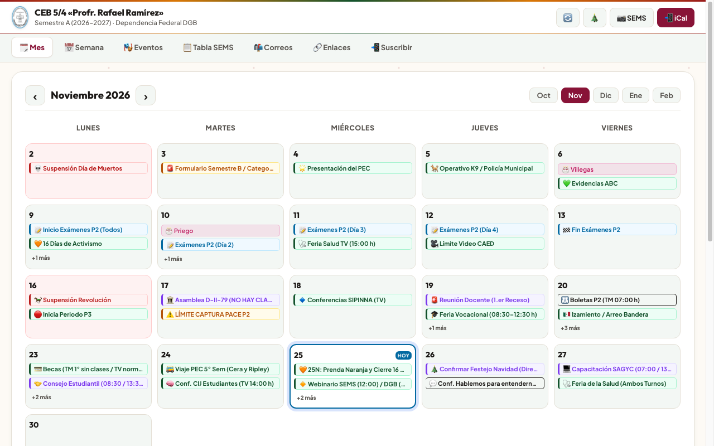
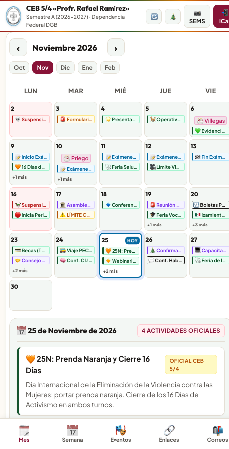
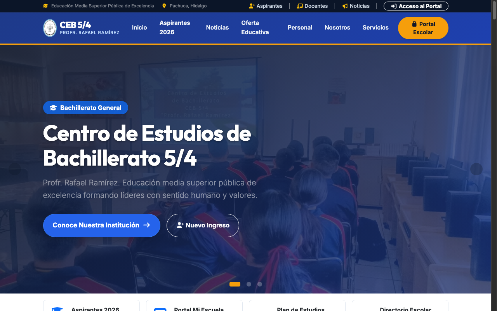
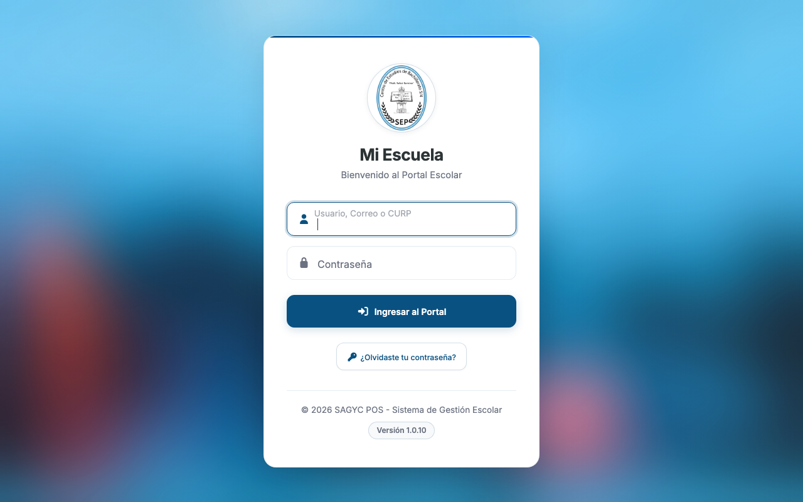
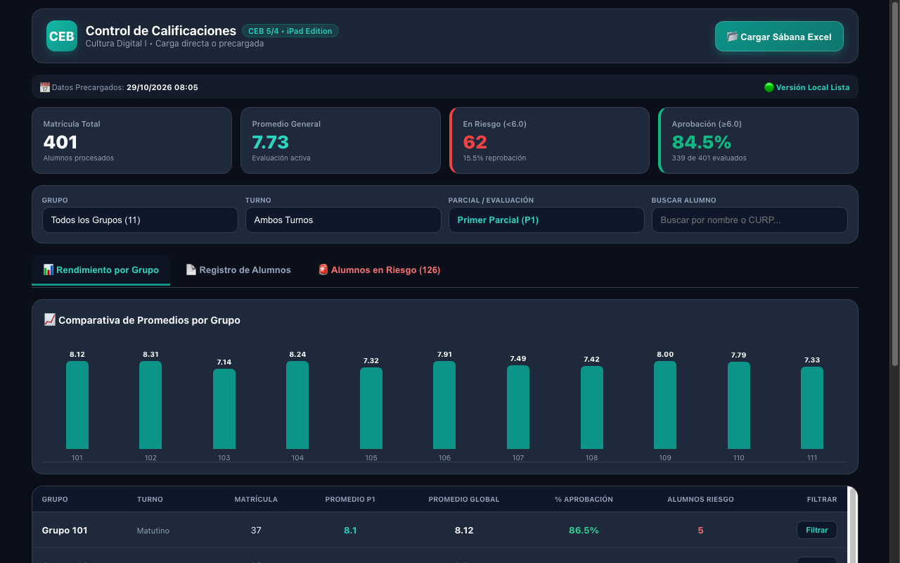

Tres Regalos de Navidad para nuestro trabajo docente
Capacitación práctica sobre la plataforma institucional ceb54.sistemas-sagyc.com y nuestra Agenda Semestral Digital.
Imparte: Dr. Felipe López Salazar · CEB 5/4 (CCT 13DBP0001Z) · DGB Federal
A veces parece que tener un sistema es “más trabajo”…
Es completamente normal pensarlo al ver una herramienta nueva. Pero vale la pena mirar la realidad completa:
Lo que ya sabemos
El trabajo no se va a acabar, y lo que nos pidan institucionalmente es lo que tenemos que entregar de una forma u otra.
La verdadera diferencia
Tener este sistema nos abre una gran área de oportunidad: pasamos de improvisar bajo presión a tener el control de nuestros grupos y fechas.
La información es poder… y también tranquilidad
1. Claridad total
Adiós a buscar fechas perdidas en decenas de mensajes de WhatsApp o archivos sueltos.
2. Anticipación
Detectamos riesgos y entregas días antes, no cuando ya cerró el sistema.
3. Mejor seguimiento
Más tiempo real para orientar al estudiante en lugar de perseguir datos dispersos.
Tres Regalos de Navidad listos para usar hoy
Tres herramientas diseñadas para nuestro trabajo diario en el CEB 5/4 (haz clic en cualquiera para explorarla):
Regalo 1: Agenda Semestral
Nuestro calendario escolar unificado, visual y sincronizable al celular.
Ver agenda →Regalo 2: Apartado de Tutorías
Cómo funciona el seguimiento de tus tutorados dentro de ceb54.sistemas-sagyc.com.
Ver módulo →Regalo 3: Estadísticos por Grado
Acceso inmediato para saber qué materia reprobó cada alumno, cuántas adeuda y dar seguimiento.
Ver estadísticos →La Agenda Semestral Digital (PC y Celular)


- Solo Lunes a Viernes: Sin ruido ni saturación visual.
- Inspector de Día: Toca cualquier fecha para leer el aviso oficial completo.
- Actualizada al día: Incluye entregas, parciales y avisos de Subdirección.
¿Dónde entramos? Plataforma ceb54.sistemas-sagyc.com


Ingresa con tu Usuario, Correo o CURP
Apartado de Tutorías en el Sistema
Todo lo necesario para acompañar a tu grupo sin perder información entre archivos:
- Vista directa por grupo tutorado: Ubicas al instante a los estudiantes asignados a tu tutoría.
- Historial y canalizaciones: Registro ordenado de entrevistas, acuerdos con padres y avisos a Orientación.
- Seguimiento continuo: Cualquier avance o incidencia queda documentado para todo el semestre.
Acceso directo a tu lista oficial
Faltas, materias y observaciones
Acuerdos con estudiante y familia
Estadísticos en el Sistema: Seguimiento Puntual
Cada tutor puede consultar su grado y grupo con información clara y accionable:
- Acceso por Grado y Grupo: Filtra exactamente los estudiantes que atiendes.
- Qué materia reprobó: Identifica de inmediato la asignatura específica donde hay rezago.
- Cuántas materias adeuda: Detecta quién lleva 1, 2 o 3+ materias en riesgo.
- Seguimiento puntual: Llega a la entrevista con padres y alumnos con datos exactos.

¿Cómo manejar llegadas tarde sin desgaste ni conflicto?
Nunca los dejamos afuera (Memorándum SUB/003), pero tampoco permitimos que interrumpan la clase ni llamen la atención:
1. En el aula: “Entrada Silenciosa”
- Calma y cero regaño público: Indicas pasar en silencio al lugar disponible; desactivas al que busca protagonismo.
- Registro frío en SAGYC: Anotas el retardo al final del módulo para detectar patrones recurrentes.
- Recuperación dentro de clase: Entrega el mismo producto formativo sin castigar la calificación.
2. Propuesta institucional: Aula de Acompañamiento
- Aula de Regularización: Espacio para reponer minutos de aprendizaje ante retardos reiterados.
- Supervisión formal: A cargo de Orientación / Prefectura con aval de Dirección (Oficio SUB/101).
- Respaldo familiar: Acuerdo y firma previa de madres/padres de familia; cero improvisación.
Así cambia nuestra semana con los 3 Regalos
| Situación cotidiana | Sin sistema (desgaste) | Con los 3 Regalos CEB 5/4 |
|---|---|---|
| “¿Qué entrega o actividad toca esta semana?” | Buscar circulares viejas entre cientos de chats de WhatsApp. | Abres la Agenda Digital y tienes fechas y descripciones oficiales en un clic. |
| “Citatorio o seguimiento de un tutorado” | Notas dispersas y falta de historial al hablar con madres/padres. | Abres el Apartado de Tutorías con datos concretos y acuerdos ordenados. |
| “¿Qué alumnos de mi tutoría reprobaron?” | Preguntar por pasillos o esperar sábanas finales cuando ya es tarde. | Entras a Estadísticos: ves al instante qué materia y cuántas reprobó cada uno. |
Hagámoslo juntos en 4 pasos
Tomen su celular o computadora y probemos ahora mismo cada herramienta para que no quede ninguna duda:
Abrir Agenda
Abre felifade.github.io/agenda-ceb54 y guárdala en tu pantalla de inicio o calendario.
Ingresar al Portal
Entra a ceb54.sistemas-sagyc.com e inicia sesión en Mi Escuela.
Explorar Tutorías
Ubica tu grupo asignado y revisa las opciones de registro y seguimiento.
Consultar Estadísticos
Entra al grado, identifica qué materia reprobó un alumno y cuántas acumula.
Estar conscientes, recordarnos y apoyarnos
Nos recordamos
Si vemos una entrega próxima en la Agenda, avisamos al compañero con tiempo.
Nos echamos la mano
Si alguien se atora entrando o consultando un dato, lo resolvemos en equipo.
Si no se puede, juntos
La tecnología está para servirnos y aligerar la carga, nunca para complicarnos.

¡A estrenar nuestros 3 Regalos!
Escanea cualquiera de los dos accesos directos y pasemos a la práctica en vivo:
Calendario oficial + Feed iCal
Tutorías + Estadísticos por grado y materia